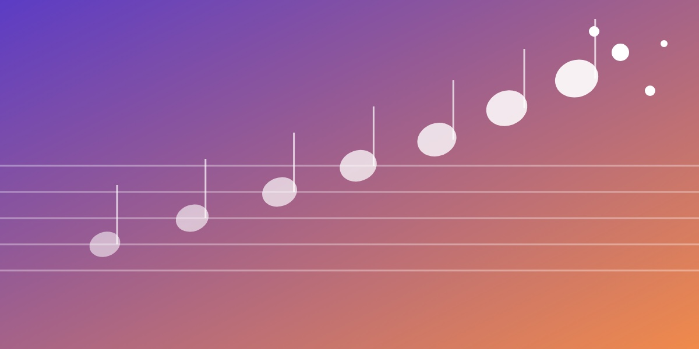

新しいアイデアは、脳が無意識に行う「次の音の予測」とその揺らぎから生まれる。
脳は生まれつき、音や言葉の並びの「次に何が来るか」を、意識しないまま学び続けています。学んだ型を当てはめれば予測は確かになり（不確実性が下がる）、型を崩せば予測は揺らぎます（不確実性が上がる）。
創造性は、この「型にはめる」と「型を崩す」の往復から生まれると考えています。予測の仕方には人それぞれの癖があり、それが個性になります。速く学ぶ人は型に固執しやすく、ゆっくり学ぶ人ほど新しさを生みやすい、という逆説的な結果も得ています。
さらに、一人で考える時間と対話の時間を交互にとり、全員が対等に関わる「場」では、個人を超えた創造性（場の知性）が立ち上がります。こうした知見をもとに、自分の創造性の癖を知るフィードバックシステムも開発し、日本科学未来館などで展示しました。